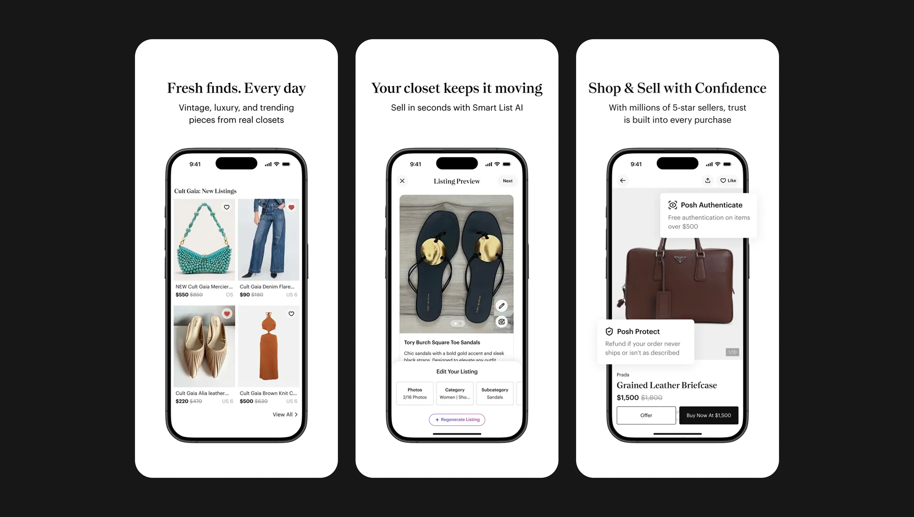

Context
A 15-year-old platform at a strategic inflection point
Poshmark operates a two-sided marketplace. Every design decision impacts both supply and demand. When sellers struggle to list, inventory shrinks. When buyers can't discover relevant items, conversion drops. When conversion drops, seller confidence falls - and the cycle compounds.
By FY2025, that cycle was working in reverse. DAU was declining, Gen-Z acquisition was lagging, and Depop and Vestiaire Collective were gaining ground on the core seller demographic. Over the years, Poshmark had expanded into live commerce, advertising, seller tools, and community features - each valuable in isolation, but together creating a product that was increasingly hard to understand and harder to use.
A new engineering platform created a rare window to address this at scale. The challenge wasn't visual modernization - it was rebuilding the experience to reinforce the marketplace flywheel: more sellers → more inventory → better discovery → higher conversion → increased revenue → more sellers.
15yr
Platform age, significant technical and design debt accumulated over time
3rd
Ranking in fashion resale, Depop and Vinted gaining ground on our core demographic
22%
New seller 90-day retention, down from 34% two years prior as faster alternatives captured our core demographic
Role & Team
Design lead across a 30-person cross-functional team
I owned the end-to-end design direction for the redesign - from north star definition through to launch. My role spanned hands-on design work on the core strategy and flows, stakeholder alignment across Product and Engineering, and leading a team of four designers across the full surface area. Every significant design decision on the initiative ran through me.
The Team
4 designers + embedded partners
- 2 Senior Designers (feed & social surfaces)
- 1 Mid-level Designer (listing, PDP, notifications)
- 1 Junior Designer (component library support)
- 1 Content Designer (microcopy & onboarding)
- 1 Embedded Research Partner (qualitative & quant)
My Hands-On Work
Strategy, architecture, alignment
- Defined the north star and three strategic pillars
- Designed the design system architecture and token structure
- Set direction on the listing flow, IA, and navigation
- Drove stakeholder alignment across Product and Eng leads
- Presented at CPO and CEO reviews at each phase gate
Design ownership by area
Each designer owned their surface end-to-end
- Feed & social surfaces - 2 Senior Designers
- Listing, PDP, notifications - Mid-level Designer
- Component library - Mid + Junior Designer
- Microcopy & onboarding - Content Designer
- Research programme - Embedded Research Partner
Strategy
Reduce effort while increasing marketplace participation
That was the strategic lens. Instead of asking "how can we improve this screen?" we asked "how can we make buying and selling feel easier?" Every design decision - feature prioritisation, information architecture, component investment - was evaluated against its impact on marketplace participation, not interface quality alone.
We translated this into three pillars, each mapped directly to a marketplace health lever.
01
Supply Growth
Poshmark's casual seller retention had fallen to 22% - not because sellers stopped wanting to list, but because the experience made them quit before publishing. Reduce that effort and supply recovers. More supply improves selection, which improves buyer conversion. Listing experience was the highest-leverage point in the flywheel.
02
Discovery Relevance
Poshmark's feed was built around social follows - who you know, not what you want. As Gen-Z buyers moved to platforms with intent-based discovery, repeat visits were declining. Feed personalisation based on browsing behaviour, style signals, and purchase history - not just social recency - was the path back to relevance.
03
Conversion Trust
Fashion resale has no fitting room. Buyers judge condition, authenticity, and seller reliability from photos and a reputation score. Poshmark's community ratings and peer evidence were underutilised - buried below the fold where they couldn't influence the decision moment. Surfacing them without adding visual noise was the conversion gap to close.
Phase 1 · Supply unlock
Seller experience + listing flow
Prioritise supply creation first. Without inventory, discovery improvements have nothing to surface and conversion improvements have nothing to convert. The listing redesign was the highest ROI bet - fastest to validate, and the change that unlocked internal momentum for the full platform rollout.
Phase 2–3 · Platform foundation
Navigation, personalization + design system
Goal-centric navigation and behavioural personalisation addressed the demand side - more relevant discovery, higher session depth, improved repeat purchase. The design system wasn't a design deliverable; it was platform infrastructure, enabling 4 product squads to build faster and more consistently across every future cycle.
Research & Insights
What the data revealed about marketplace health
We ran a mixed-methods research programme in partnership with Data Science and Research. Quantitative signals came from session analysis, funnel abandonment studies, navigation path analysis, listing completion analytics, and marketplace conversion trends across millions of visits. Qualitative signals came from buyer and seller interviews, new-user studies, and diary studies. Not all findings shifted priorities - but the ones that did fundamentally changed the sequencing.
The most consequential finding
Top 5% of sellers drove 60% of GMV - designing for the wrong user would have optimised the wrong outcome
We had initially planned to optimise the listing experience for first-time casual sellers. The marketplace data changed that call. Power sellers were not an edge case - they were the economic backbone. Designing for the 95% would have improved onboarding metrics while potentially degrading the experience for the users keeping the marketplace alive. Concretely: bulk listing shortcuts, pricing controls, and inventory management surfaced prominently for recognised power sellers. For first-timers, these revealed progressively after their first successful listing - reducing cognitive load without removing capability. One product, two experiences, served through progressive disclosure.
Hypothesis invalidated by session data
Step count wasn't the listing problem - the abandonment was happening upstream
The prevailing assumption was that a shorter listing flow would improve completion. Session recordings showed the real pattern: sellers were dropping out before they reached the fields at all. The friction was at photo upload - slow, unreliable, and progress wasn't preserved on failure. Reducing step count without fixing this would have shipped a faster path to the same exit point. The fix required infrastructure work, not just flow redesign.
A deliberate trade-off
Buyer discovery requests were scoped to Phase 2 - and that was the right call
Buyers consistently surfaced search and discovery as pain points. We made a conscious decision to deprioritise this from Phase 1. The logic: without supply, better discovery is irrelevant. Seller activation had a 4x higher return than buyer-side improvements in the current state of the marketplace. We documented the requests and committed them formally to Phase 2 rather than letting them dilute Phase 1 focus.
A deliberate under-investment
Shipping a worse version of personalisation first was the right call
Feed personalisation ranked as a top-3 priority in analytics, but full algorithmic personalisation required 6 months of backend infrastructure we didn't have in Phase 1. We chose to ship a manually curated signal version deliberately - not as a fallback, but as a learning strategy. A live product generates real behavioural data; a design document generates assumptions. Two quarters of live signal data directly shaped the Phase 2 algorithm investment. We couldn't have specified it as accurately without this phase earning it first.

Key Design Decisions
The calls that shaped the platform
Every major direction was tested against at least one alternative. These weren't aesthetic choices - they were strategic trade-offs with measurable stakes on marketplace health.
Business problem: Navigation had been built by teams optimising for feature visibility, not by users trying to complete goals. The result was a tab bar that reflected internal ownership rather than customer intent - users spent time navigating, not doing. We had data showing navigation-related abandonment was among the top 3 exit patterns across the funnel.
There was no discernible logic or hierarchy tying the navigation together. We redesigned it around user intent - organising every feature around what users were trying to accomplish rather than which team owned it. We ran a controlled A/B test on a 10% traffic split for 2 weeks - success criterion was no regression in session depth, with improvement as the target.
The variant won on every session quality metric. The data resolved the stakeholder debate without compromise - no one could argue with a 2-week live test. We shipped to 100% of users after a 4-week ramp.
Business problem: The homepage was attempting to serve four different user types simultaneously - new buyers, power buyers, casual sellers, and professional sellers. The result was an average experience for everyone and an optimised experience for no one. Conversion and repeat visit rates reflected this.
We considered building dedicated buyer and seller experiences. The risk: marketplace users frequently move between roles. A rigid segmentation model would add long-term product complexity. We chose behavioural personalisation instead - the homepage adapted dynamically based on shopping activity, selling activity, engagement patterns, and lifecycle stage. Flexible and scalable.
Phase 1 shipped with manually curated signals - a deliberate under-investment that generated real behavioural data. Feed engagement improved, though the bigger gains came in Phase 2 when algorithmic personalisation replaced the manual layer. We couldn't have made that investment confidently without this phase earning it first.
Business problem: The listing experience had been designed to collect comprehensive item data - good for search and recommendations, but the complexity was killing supply creation. Casual sellers were arriving with intent to list and leaving with nothing published. The marketplace benefits more from a completed listing than an abandoned perfect one.
We redesigned around momentum: AI-assisted product details, smarter defaults, progressive disclosure, and simplified photo capture. Step count went up on paper; perceived effort dropped significantly. The insight from testing: cognitive load matters more than step count. The goal was to make creating a listing feel like progress, not work.
The listing redesign was the first thing we shipped - and the first proof point for the supply-side thesis. Completion improved 24% at steady state. Time-to-list dropped from 4.2 minutes to 156 seconds. Those numbers funded the Phase 2 budget conversation.
Business problem: The existing Figma component library had grown organically across years of additive work - inconsistent naming, undocumented variants, and tight coupling to the old visual language. Extending it would have carried forward technical debt for every squad, for the duration of the 18-month rollout.
I positioned the rebuild as an operational investment, not a design project. The business case: a properly tokenised foundation would reduce design-to-development cycle time, eliminate cross-squad inconsistency, and make every future product cycle faster. We presented this at the executive level alongside the product roadmap - not separately as a design ask.
Adopted by all 4 squads within 3 months, against a 6-month target. First-cycle QA defect rate dropped ~40% and design-to-development handoff time was cut roughly in half. The system paid for itself in the first product sprint after adoption - and became the foundation every squad built from in the cycles that followed.

Impact
Business outcomes across every dimension of the marketplace
The redesign delivered measurable improvement across supply, demand, conversion, retention, and operational efficiency. The DAU lift was the strongest single-year platform improvement since the launch of social selling features. Supply-side gains held through the following two quarters.
+6.4%
Marketplace GMV - the most direct measure of the flywheel working
+8%
DAU year-over-year, the strongest platform-wide engagement growth in five years
+25%
New seller activation within 90 days, reversing three consecutive quarters of decline
38% faster time-to-list
Average listing time dropped from 4.2 minutes to 156 seconds. For a power seller listing 50+ items a month, that's hours recovered each week - and the most direct driver of the seller retention improvement.
-29% customer support tickets
Fewer users hitting dead ends on listing, navigation, and onboarding. Support volume is one of the most honest proxies for experience quality - and one of the few metrics that can't be spun.
Design system adopted in half the time
All 4 squads live within 3 months against a 6-month target. Design-to-development cycle time and QA defect rates dropped in the first cycle after adoption. The system became the shared foundation for every product build that followed.